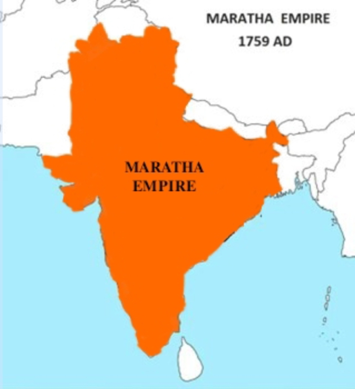

प्रत्येक घटक दुसऱ्या घटकाशी जोडलेला आहे: व्यक्ती ↔ किल्ला ↔ लढाई ↔ प्रसंग ↔ समाधी व स्मारक ↔ ऐतिहासिक कागदपत्र.
खालीलपैकी कोणताही मुख्य ऐतिहासिक नोड (Entity) निवडा. सिस्टम आपोआप त्याचे किल्ले, लढाया, समकालीन कागदपत्रे आणि संबंधित व्यक्तींची माहिती दर्शवेल.
रायगड, राजगड, तोरणा, सिंहगड, प्रतापगड, शिवनेरी, पन्हाळा, विशाळगड, पुरंदर आणि लोहगड — स्वराज्याचा अभेद्य पाषाणी कणा.
सिंधुदुर्ग, विजयदुर्ग, सुवर्णदुर्ग, पद्मदुर्ग आणि कुलाबा किल्ला — सरखेल कान्होजी आंग्रे यांच्या नेतृत्वाखालील अजिंक्य मराठा नौदल.
उत्तरेत दिल्ली, लाहोर, अटक, ग्वाल्हेर, इंदूर आणि दक्षिणेत जिंजी, तंजावर — मराठा महासंघाने देशभर उभारलेला प्रशासकीय व सांस्कृतिक प्रभाव.